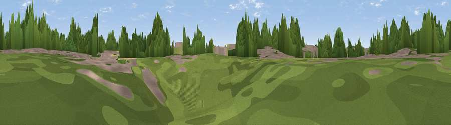

St Crispin's Tower Hill
#40908 in England · top 76% of its area beats it · near DustonThe view, rendered

A 360° render of this exact spot computed from the terrain model, tree cover and land cover — summer colours, afternoon light, calibrated against photographs of famous viewpoints. Real trees, hedges and buildings will differ in detail.
The panorama
Grey silhouette: terrain skyline in each direction (720 bearings, Earth curvature and refraction included). Dashed green: skyline with trees (+15 m) and buildings (+8 m) as obstacles. Blue strip: how far the ground is visible on each bearing.
Where the view opens
Wedge length = distance to the farthest visible ground on that bearing (vegetation-aware). Rings at 10, 25 and 50 km.
What fills the view
37% cropland · 22% built-up · 21% grassland · 19% woodland
Angular shares of the visible panorama (visual magnitude), not map area. Landscape diversity 0.59 (0–1 Shannon).
Key numbers
More beautiful places nearby
The staircase of upgrades: each row has a higher view potential than everything closer. Driving times are estimates from straight-line distance, calibrated against real road routing — check an actual route before setting out.
| Place | Direction | Drive | Score |
|---|---|---|---|
| Dallington Hill | NE · 3 km | ~7 min | 33.1 |
| Viewpoint near Harpole | W · 3 km | ~8 min | 42.3 |
| Glassthorpe Hill | W · 4 km | ~10 min | 44.9 |
| Viewpoint near Long Buckby | NW · 9 km | ~18 min | 45.6 |
| Viewpoint near Norton | W · 12 km | ~23 min | 56.8 |
| Viewpoint near Staverton | W · 16 km | ~28 min | 63.3 |
| Big Hill - Staverton Clump | W · 16 km | ~29 min | 68.4 |
| Viewpoint near Northend | WSW · 33 km | ~50 min | 69.7 |
52.24363, -0.95928 · source: osm peak · position refined by local search. Computed location — check access rights before visiting.